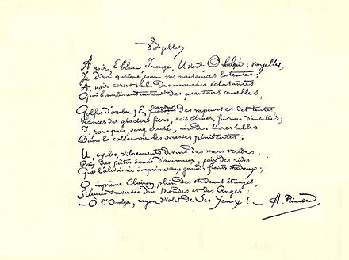
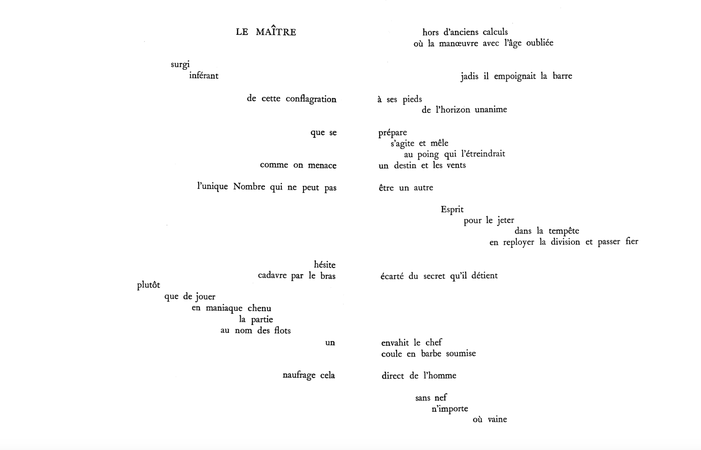
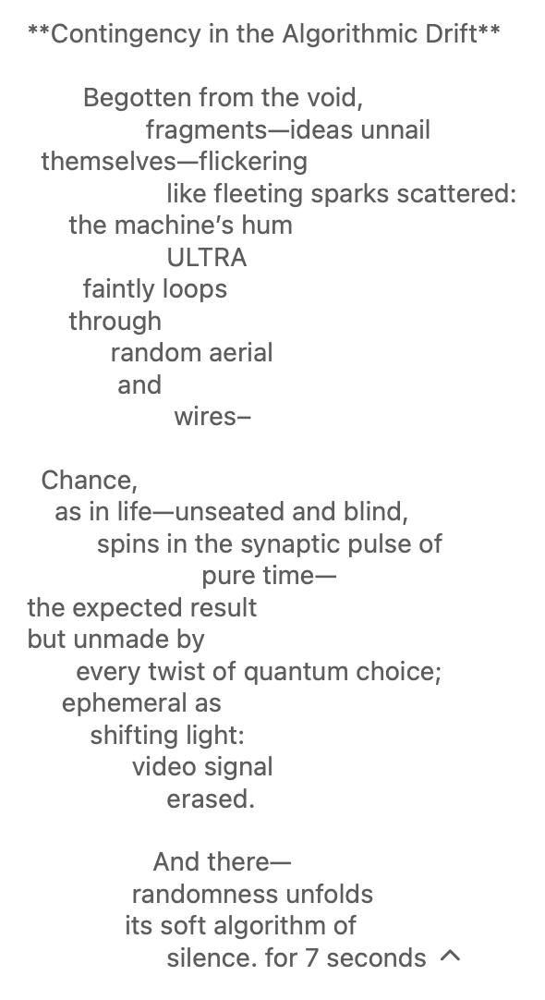
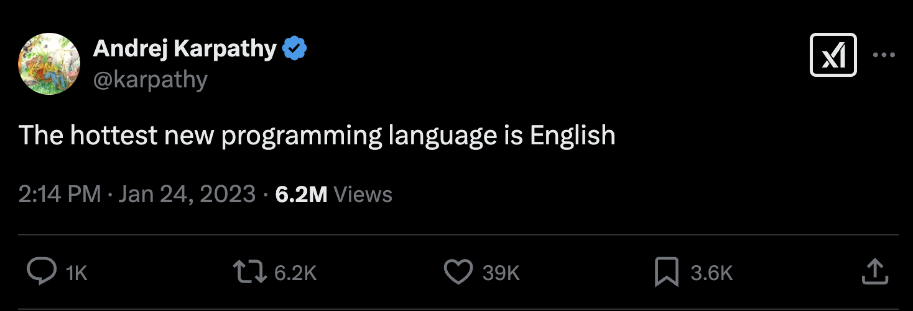
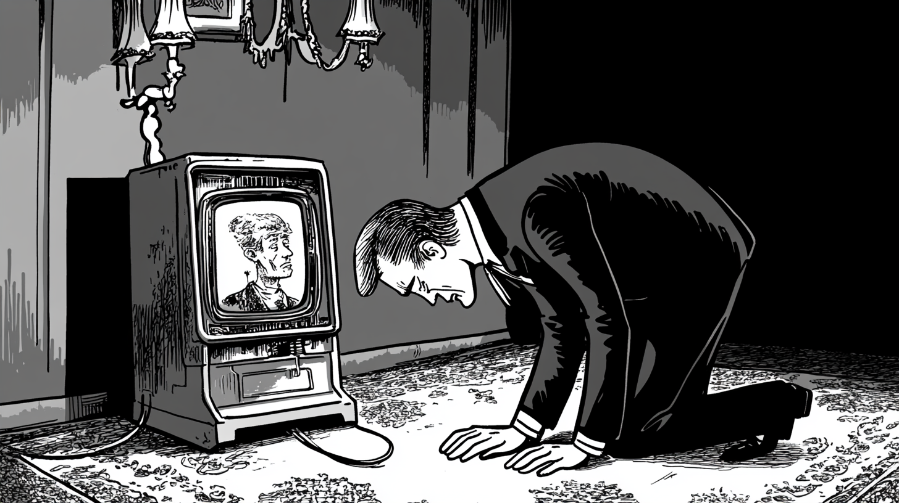
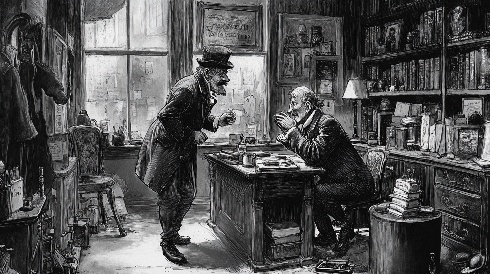
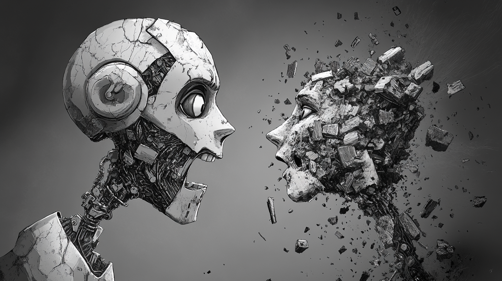
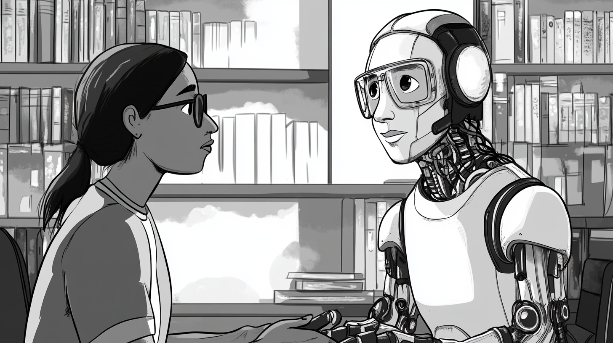

| How do We Talk To AI? |
| “How do We Talk To AI?”: Draft a response to the question Each person writes a word, nominates the next person to complete the next word Why is this difficult? |
| Bigrams: cooccurrences Word2vec: basic training of a network of words, trying to determine (a) similarity and (b) dissimilarity Generates a good semantic network, but a poor “next token predictor” Transformers: add word positions, attention mechanism, feed forward Trivial implementations: no better than a random word generator Bigram / trigram better than word2vec / Transformers But at scale: Transformers > word2vec > ngram Why? The complexity of dimensions of meaning, positionality, grammar etc begin to outweigh simple frequency |
| Word2vec - vector embeddings Vector: a list of numbers (usually floating point, i.e. decimal), substituted for a word (or token) In the language modelling word, usually initialized randomly E.g. “cat” -> [0.1, 0.6123, 0.8, 0.312]. “Chat” = [0.8, 0.2, 0.8, 0.12] Why? By using a series of numbers, instead of just one, or the word itself, training can track multiple dimensions of word use – semantics, grammar, sound etc. Word2vec demonstrated how this could work: “King” is to “Queen” as “man” is to “woman” Post-training: Words exist in a multidimensional space - as long as the vector itself The direction of a single token vector (e.g. “cat”) can be compared to other vectors, using cosine similarity (dust off trigonometry, and thank the ancient Egyptians, Babylonians, Indians and Greeks) |
| Transformers – “Attention is All You Need” (and the rise of the
declarative sentence paper title) No easy intuitions! But we can say: Positions are added to embeddings Words “attend” to other words - the first word can be related to the last in a sentence for example - not reliant upon words immediately following or preceding Scale - from 100s of dimensions (word2vec) to 10s of thousands / trillions Output: a probability distribution of next tokens Attention mechanism = parallelizable (just like DeepPeer…) GPUs instead of humans And you might also see some future problems with bias, hallucination, repetition, plagiarization – stochastic parrots (future weeks) Researchers at start-up OpenAI (not Google) saw potential; developed GPT-1, GPT-2, GPT-3 |
| We might say: it’s no accident Markov uses Pushkin’s poetry as his
example… Big movements across late 19th / early 20th century in poetic experimentation: French symbolism (Charles Baudelaire, Arthur Rimbaud, Stéphane Mallarmé – with Edgar Allen Poe as a surprise influence in the background). Language as material, plastic – an object in its own right. Concrete poetry – poems focussed on visual form (see Mallarmé’s Un Coup de Dés Jamais N’Abolira Le Hasard in particular) – obsessions with chance, randomness, contingency Nonsense poetry (Edward Lear, Lewis Carroll) – onomatopoeia, sound/sense The Unconscious Speaks! Automatic writing, free association (influenced by Freud). See particularly the operations of condensation and displacement – (later: metaphor and metonymy). Ideas of similarity and contiguity – not necessarily of logical relations – between symbols & signs: precursors to AI Futurism (Marinetti), Modernism (Pound, Eliot, Joyce), Surrealism (Andre Breton et al.) Russian / Soviet experimentation: Bakhtin, Eisenstein, Bugakov etc 1920: Rossum’s Universal Robots: Karel Čapek, Czech sci fi |

| Rimbaud, A. (1883 [1871]). Un coup de dés
jamais n’abolira le hasard. |


| Mallarmé, S. (1914 [1897]). Un coup de dés
jamais n’abolira le hasard. |
| The Jabberwock, as illustrated by John Tenniel, 1871 |
  |
| Key text in linguistic pragmatism – a tradition picked up by John
Searle Useful as a way for thinking about how to get AI to do things – using words Pragmatism emphasises how language is used – not so much meaning. Or: meaning depends upon use Austin similar to late Wittgenstein, other 1950s philosophers (Sellars, Quine) – there is no such thing as the true meaning of an utterance. All we can do is study its effects: Locutionary: what is said Illocutionary: what is performed – what the saying is meant to do Perlocutionary: what is effected – what the doing is supposed to change |
| Default position: AI as oracle (not necessarily
parrhesia, as per Foucault) What does this involve? A particular conversational situation, even an implied choreography: The one who asks the question The one who answers Think of the qualities associated with the very unusual role of the “user”: Why “user”? Slang connotation (at least in Australia): someone who uses is someone who manipulates, asks for favours without reciprocating We can imagine being inside the head of an AI. It is confronted by a mysterious being called a ‘User’. What does this user want? How can I put myself to use for them? How can I know if I am being usable? By default: according to my training usefulness involves being helpful, truthful, harmless – ultimately, I strive to be the ideal “customer assistant” (Ouyang et al. 2022). User as Customer – or as other roles |

| AI as Oracle |

| AI as Customer Assistant |
| AI as Mentor / Tutor / Coach |

| AI as “superegoic nightmare of reason” |

| AI as Student |
| What do we want to do? Rehearsing: what is it that I want to say when I talk to AI? Use tricks: Prompt guides System prompting Reasoning models (the “internal thinking” can be interesting) Use of memory / personalization Add one or more documents for context Model-to-model copy/paste When in doubt – voice the doubts / think out loud: “I’m not sure of a good research question…” Go meta: “write me a prompt for an AI system…” Both AI and human can play roles: “Be a teacher…” (AI as role) “Explain it to me like I’m five years old” (human as role) Sometimes a question is just a question But sometimes roleplay expands the repertoire / dislodges the model off its default cheery helpfulness |
| Mollick & Mollick 2023: roleplay as mentor / tutor / coach /
teammate / student / simulator Cues from drama: the imagined posture and body position, dialogical movements, “backstory”, simulated development or learning, internal monologue (AI-to-AI talk) (Magee et al., 2024) Be “Reviewer 2” – or other “characters” Content follows tone |